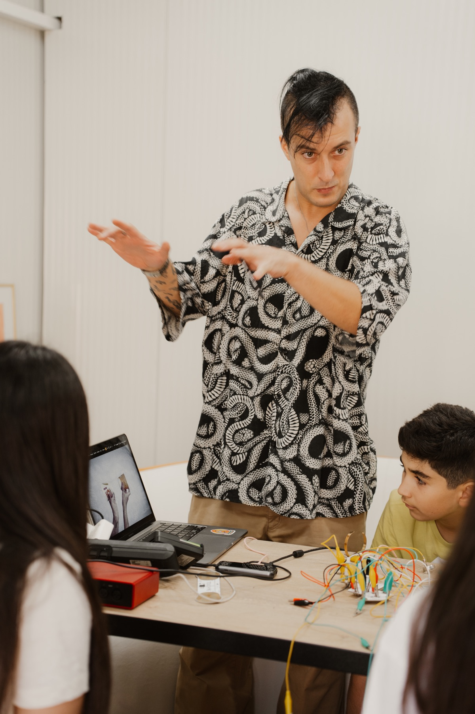
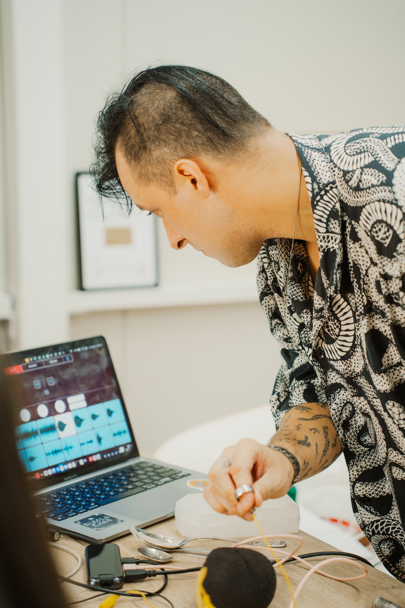

MUSIC LABORATORY / DILIJAN
ИГРАЙ.
ИМПРОВИЗИРУЙ.
СОЗДАВАЙ.
Tune Tots — детская музыкальная лаборатория, где музыка изучается через игру, эксперименты, технологии и собственное творчество.
WHAT IS TUNE TOTS?
Музыка
для всех!
Музыкальным инструментом может стать что угодно: голос, стол, вода, ветка, полевые цикады — или любой звук вокруг нас.
В Tune Tots ребёнок не ждёт несколько лет, чтобы наконец начать создавать. Мы соединяем музыкальную теорию, технологии, звукорежиссуру и игру — и превращаем знания в практику сразу.


COMPOSER / SOUND DESIGNER
THE PERSON BEHIND THE LAB
Никола Чен
Композитор, саунд-дизайнер, мультиинструменталист, преподаватель и основатель Tune Tots Lab.
- Окончил Московскую государственную консерваторию им. П. И. Чайковского по классу кларнета и фортепиано.
- Окончил курсы звукорежиссуры в школе МАСКЕЛИАДЕ и саунд-дизайна в школе MusicLab.
- Преподавал кларнет в музыкальной школе им. А. Б. Гольденвейзера и курс звукорежиссуры для детей в музыкальной школе им. Н. П. Ракова в Москве.
- Сотрудничает как композитор с Audi, Mercedes-Benz, McDonald’s, Skyeng и Playtronica.
- Музыка Николы звучала на Неделе моды в Копенгагене и вошла в саундтрек театральной постановки на Бродвее в Нью-Йорке.
- Куратор экспериментальной сцены фестиваля DiliRock в Дилижане.
- Лауреат I премии Международного конкурса имени Яна Сибелиуса в Финляндии.
- Участник событий Resonance Moscow, M-Division и трёх Московских биеннале современного искусства.
INSIDE THE LAB
Что происходит
внутри лаборатории?
Каждое занятие — маленькая звуковая экспедиция. Сначала мы слушаем и исследуем, затем подключаем найденные звуки к технологиям, собираем ритмы и превращаем всё в собственную музыку.






Не урок по шаблону, а пространство, где можно услышать идею, проверить её и сделать по-своему. Каждый участник уходит с реальным музыкальным результатом.

PLAYTRONICA × TUNE TOTS
Что, если яблоко
может стать
инструментом?
Девайсы Playtronica позволяют превратить практически любой проводящий предмет в музыкальный инструмент. Ребёнок касается яблока, лимона или растения — и сразу слышит звук.
Удивление превращается в любопытство. Любопытство — в желание экспериментировать и учиться.
WHY A LABORATORY?
Здесь музыка
становится своей.
Практика раньше страха.
Новое знание сразу становится частью музыки.
Эксперимент вместо шаблона.
Ошибки могут стать началом новой композиции.
Творчество вместо соревнования.
Дети учатся слушать, поддерживать и создавать вместе.

AT THE END
Ребёнок уходит
с музыкой.
Не только с новыми знаниями, но с собственным треком, опытом коллективного выступления и ощущением: «Оказывается, я уже умею создавать музыку».

THE COURSE
От первого звука
до собственного трека.
За восемь встреч дети пройдут путь от первого записанного звука до законченного музыкального произведения.
Финальный результат — собственный трек и опыт коллективного выступления в электронном оркестре Tune Tots с устройствами Playtronica.
READY TO PLAY?
© 2026Давай
создавать.
Напишите нам, чтобы узнать ближайшую дату набора и записать ребёнка.
STAY TUNED
Telegram
и Instagram
Новости лаборатории, анонсы наборов и музыка из наших экспериментов.